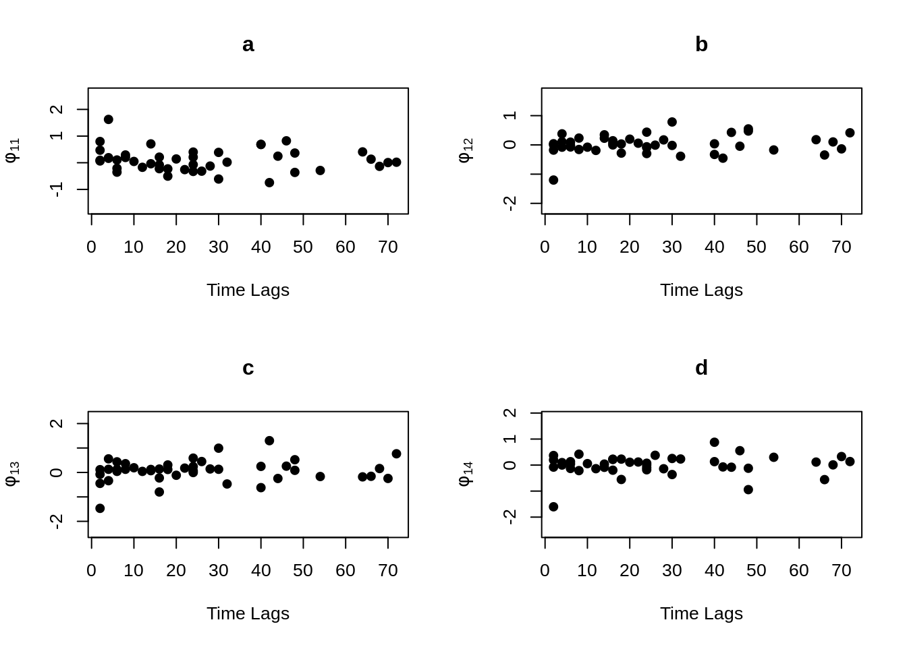
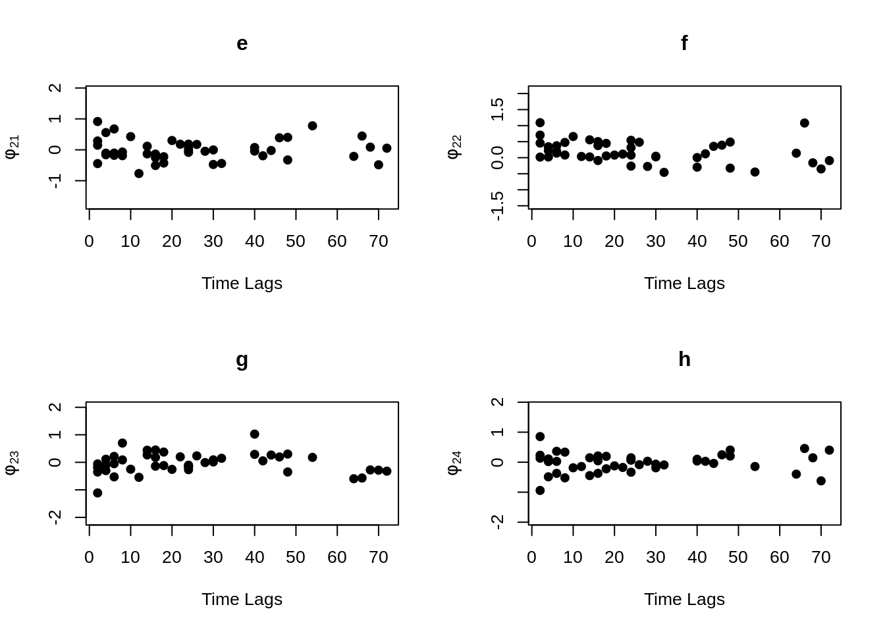
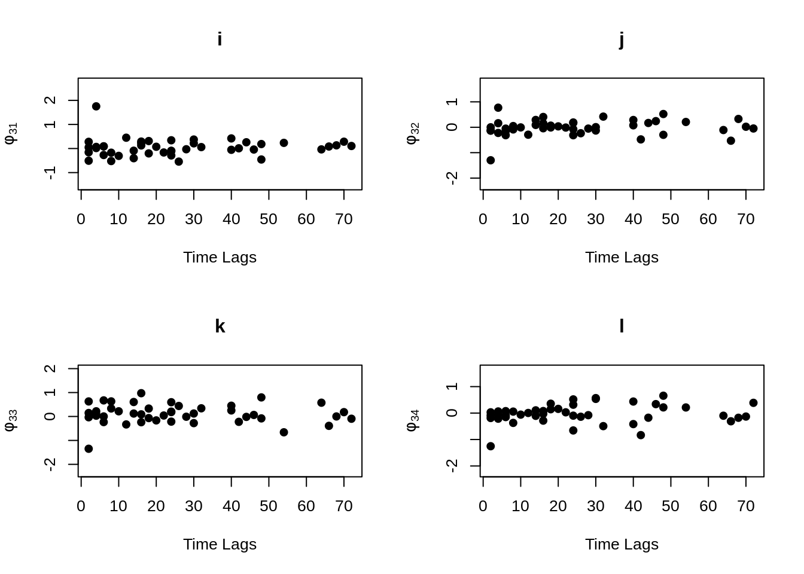
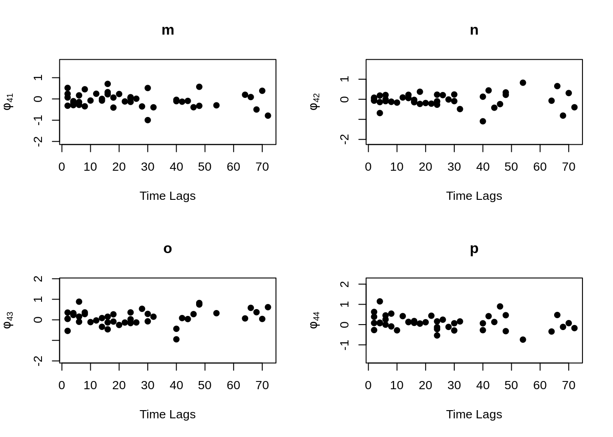
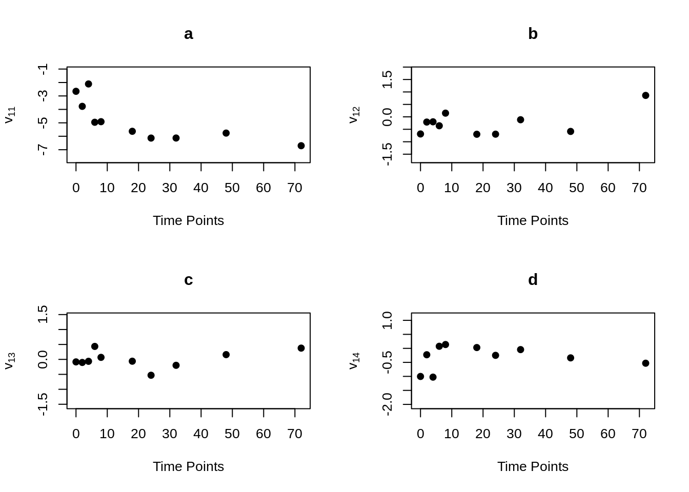
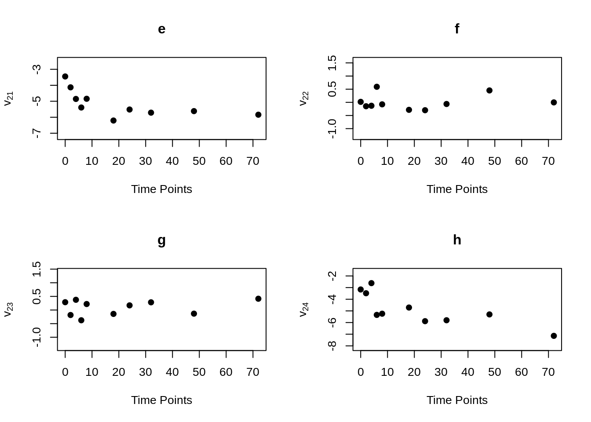
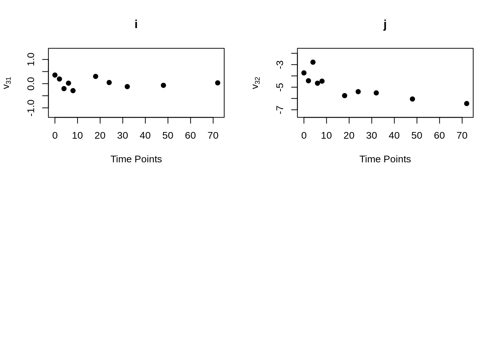

12 Introduction to Longitudinal Data and MLGM Package
Haoyang Shen
#install.packages("devtools")
#devtools::install_github("priyakohli5/MLGM", force=TRUE)
library(MLGM) # must be installed from sourceThis file will introduce and explain in details for some functions in an R-package MLGM, stands for multivariate longitudinal data analysis using graphical models". This package can be used to visualize the trends and dependence patterns among repeatedly measured outcomes, specifically generating the profile plots and multivariate regressograms. In addition to visualizing the existing patterns, this package provides ways to model mean and covariance for variables measured at regular or irregular time points and it guarantees the positive definiteness of the estimated vocariance.
Reference: The MLGM package is built by Professor Priya Kohli from Connecticut College with Xinyu Du (Johns Hopkins University) and Haoyang Shen (Columbia University) as contributors. MLGM is available through GitHub (Link to the Package){target="_blank“}. The package comes along with the research paper "Graphical Models for Mean and Covariance of Multicariate Longitudinal Data", published on Statistics in Medicine (Link to the Paper){target=”_blank"}.
12.1 Longitudinal Data and Longitudinal Studies
Along with cross sectional data and time series data we have learned before, Longitudinal data, sometimes referred to as panel data, is a collection of repeated observations of the same subjects, taken from a larger population, over a period of time.
Longitudinal data is a very important type of data. We can see its application on multiple different areas such as Medical Care (Clinical trials, Health data..), Epidemiology, Biology. A simple example for univariate longitudinal data would be a data set that keep tracks of the blood pressure of all student in STAT_5702 each week during 2021 to 2022. While a univariate longitudinal data contain only one response variable, which is the blood pressure in our example, a multivariate longitudinal data would contain more than one response variables. Taking the same example, a multivariate longitudinal data would contain information not only of our blood pressure as a variable, but also variables of our weight, heartbeats, BMI…
Before going deep into the MLGM package, let’s take a look at the ideal shape for the longitudinal data in order to get a better understand on what exactly is longitudinal data:
The matrix above is showing a structure of univariate longitudinal data for one response variable of \(n\) subjects measured at \(T\) time points, where \(Y_{i,j}\) is the value for the \(i\)th subject measured at the \(j\)th time point. Through looking at the shape above, one may have question that what’s the difference between longitudinal data and time series data. Indeed, time series data usually focus one subject or a few more while longitudinal data keep track on large group of individuals(subjects). Moreover, longitudinal data usually contain data from more than one variables. Through looking at the shape for multivariate longitudinal data shown below, one could get a more clear answer to the question.
The matrix above is showing the a structure of multivariate longitudinal data fore \(J\) response variables of \(N\) subjects at \(T\) different time points. One can think of it as a horizontal block matrices where each matrices is the same as the matrix we show for univariate date in the previous image. In this case, \(Y_{iw,j}\) is show the value of the \(j\)th variable of the \(i\)th subject at the \(w\)th time point.
Analysis on longitudinal data is meaningful. The main goals of longitudinal study is to:
* (1) Find the relationship (magnitude and direction) between response at adjacent time points.
* (2) Study the change in response over time whether in behaviors, attitudes, or experience.
12.2 The “MLGM” R Package
After looking at the shape of longitudinal data, we can see that it’s somewhat more complicate comparing to the cross-sectional data and time series data. Hence, in order to visualize this type of data, one would need the help from some tools. Here comes the MLGM R package which could help us with this job.
12.2.1 Install
First of all, we need to install and load the MLGM package from GitHub
#install.packages("devtools")
#devtools::install_github("priyakohli5/MLGM", force=TRUE)
#library(MLGM)Inside the MLGM package, there are 11 functions in total, including two dataset from two real longitudinal studies, microarray data from the T-cell activation study and Mayo Clinic’s primary biliary cirrhosis of the liver study. In this file, detail usage of two main functions on visualizing will be shown, which are mvpf() and mvp() for profile plot and mvr() for regressograms.
12.2.2 Profile Plot (mvp() and mvpf())
Profile Plot is an important tool in multivariate longitudinal data analysis, it allows us to visualize the trends among repeatedly measured outcomes. First, let’s take a look at the profile plot for simple univariate longitudinal data tracking growth of orange trees, called Orange (type ?Orange to see the data). The data set contain information about circumference of 5 Orange Trees measured in 7 unequally spaced time points.
data(Orange)
Orange## Tree age circumference
## 1 1 118 30
## 2 1 484 58
## 3 1 664 87
## 4 1 1004 115
## 5 1 1231 120
## 6 1 1372 142
## 7 1 1582 145
## 8 2 118 33
## 9 2 484 69
## 10 2 664 111
## 11 2 1004 156
## 12 2 1231 172
## 13 2 1372 203
## 14 2 1582 203
## 15 3 118 30
## 16 3 484 51
## 17 3 664 75
## 18 3 1004 108
## 19 3 1231 115
## 20 3 1372 139
## 21 3 1582 140
## 22 4 118 32
## 23 4 484 62
## 24 4 664 112
## 25 4 1004 167
## 26 4 1231 179
## 27 4 1372 209
## 28 4 1582 214
## 29 5 118 30
## 30 5 484 49
## 31 5 664 81
## 32 5 1004 125
## 33 5 1231 142
## 34 5 1372 174
## 35 5 1582 177
Orange_data <- matrix(Orange$circumference, nrow = 5, ncol = 7, byrow = TRUE)
time <- c(118, 484, 664, 1004, 1231, 1372, 1582)
mean.circum <- colMeans(Orange_data)
mvpf(Orange_data, time, mean.circum, title = "Circumference of Orange Trees", xlabel = "Age(days since 1968/12/31)", ylabel="Circumference of Orange Tree(mm)", scol="gray", mcol="black",fcol="red",lwd.mean=2,lwd.fit = 3,lty.fit =2)The plot shown above is the profile plot for the simple data set of orange trees. The lines colored in grey represent the circumference of 5 orange trees within the given time period. The black line is represent the average response of the 5 trees, while the red dotted line is the fitted mean or estimate average. In this case we just use the mean for simplicity, but one can include the fitted mean from models as an input. Profile plot is a great tool for us to observe the trend of longitudinal data. As shown above, one can clearly see the trend of how circumference of these orange tree growth within the given time period.
After looked at the generated plot, let’s look into detail of using this function on your own dataset. There are a few points we have to notice:
Before using the
mvpf()function to generate plot, we need to first check at the structure of the data set. In order to use this function successfully, we have to make sure the data we put in the function as parameter is in the structure that mentioned in Section 1. Specifically, the data of input should be a data frame or matrix with \(n\) rows for subjectes and \(T\) columns for repeated measurements.One good thing about the
mvpf()function is that it could handle the longitudinal data that are measured at unequally spaced time points. For the longitudinal data that are measured at equally or unequal spaced time points, one just need to provide the time points in vector as input, the function will take care the rest. The example we used above is a data that was measured at unequally spaced time points.data, time vector and the mean fitted vector is option for user to see how estimate average would fit on the plot. The rest of the parameter are just graphical parameter. If you want to detail information about other optional parameter, please check the description of the
mvpf()function.
Note: If one do not want to include the estimated mean in the profile plot, there is a simple version of the mvpf() function in the package, called mvp(). The mvp() function can also generate the same profile plot as above, but one have the option to choose whether to plot the average response. If not, simply set the “mean” parameter" as “mean = False”. In addition, the mvp() could be used only one compute the average response, if one only interested in computing the mean value at each time plot without generating the profile plot, one can set the “plot” parameter as “plot = FALSE”. Use the same example of oranges tree,
data(Orange)
Orange_data <- matrix(Orange$circumference, nrow = 5, ncol = 7, byrow = TRUE)
time <- c(118, 484, 664, 1004, 1231, 1372, 1582)
mvp(Orange_data, time, mean=FALSE, title = "Circumference of Orange Trees", xlabel = "Age(days since 1968/12/31)", ylabel="Circumference of Orange Tree(mm)", scol="gray", mcol="black", lwd.mean=2)## [1] 31.0 57.8 93.2 134.2 145.6 173.4 175.8Known all the points we need to notice of using this function, let’s see a more complicated how can we use mvpf() (mvp()) for multivariate longitudinal data
## [1] 44 40
summary(Tcells)## FYB1 CD691 IL2RG1 CDC21
## Min. :19.37 Min. :15.74 Min. :17.38 Min. :18.98
## 1st Qu.:20.25 1st Qu.:15.89 1st Qu.:17.62 1st Qu.:19.10
## Median :20.25 Median :16.02 Median :17.82 Median :19.22
## Mean :20.22 Mean :16.02 Mean :17.81 Mean :19.28
## 3rd Qu.:20.53 3rd Qu.:16.10 3rd Qu.:17.97 3rd Qu.:19.26
## Max. :20.53 Max. :16.68 Max. :18.29 Max. :20.25
## FYB2 CD692 IL2RG2 CDC22
## Min. :19.28 Min. :16.48 Min. :17.67 Min. :19.04
## 1st Qu.:19.97 1st Qu.:18.72 1st Qu.:17.88 1st Qu.:19.11
## Median :20.10 Median :18.89 Median :18.07 Median :19.19
## Mean :19.98 Mean :18.51 Mean :18.06 Mean :19.30
## 3rd Qu.:20.19 3rd Qu.:18.89 3rd Qu.:18.17 3rd Qu.:19.28
## Max. :20.19 Max. :19.04 Max. :18.89 Max. :20.19
## FYB3 CD693 IL2RG3 CDC23
## Min. :15.89 Min. :17.01 Min. :15.72 Min. :18.09
## 1st Qu.:19.11 1st Qu.:19.17 1st Qu.:18.33 1st Qu.:19.03
## Median :19.25 Median :19.35 Median :18.40 Median :19.11
## Mean :19.03 Mean :19.13 Mean :18.38 Mean :19.19
## 3rd Qu.:19.30 3rd Qu.:19.69 3rd Qu.:18.50 3rd Qu.:19.25
## Max. :19.52 Max. :19.69 Max. :19.11 Max. :20.51
## FYB4 CD694 IL2RG4 CDC24
## Min. :17.99 Min. :17.33 Min. :17.93 Min. :18.54
## 1st Qu.:18.30 1st Qu.:18.66 1st Qu.:18.35 1st Qu.:18.80
## Median :18.35 Median :18.93 Median :18.41 Median :18.85
## Mean :18.32 Mean :18.71 Mean :18.38 Mean :18.92
## 3rd Qu.:18.41 3rd Qu.:19.29 3rd Qu.:18.41 3rd Qu.:18.97
## Max. :18.54 Max. :19.29 Max. :18.66 Max. :19.72
## FYB5 CD695 IL2RG5 CDC25
## Min. :18.16 Min. :17.79 Min. :18.21 Min. :18.98
## 1st Qu.:18.34 1st Qu.:19.10 1st Qu.:18.57 1st Qu.:18.98
## Median :18.46 Median :19.21 Median :18.59 Median :19.04
## Mean :18.47 Mean :19.07 Mean :18.65 Mean :19.27
## 3rd Qu.:18.59 3rd Qu.:19.53 3rd Qu.:18.68 3rd Qu.:19.15
## Max. :19.04 Max. :19.85 Max. :19.15 Max. :20.49
## FYB6 CD696 IL2RG6 CDC26
## Min. :19.44 Min. :17.99 Min. :19.05 Min. :17.99
## 1st Qu.:19.58 1st Qu.:19.05 1st Qu.:19.14 1st Qu.:18.31
## Median :19.58 Median :19.21 Median :19.21 Median :18.38
## Mean :19.72 Mean :19.09 Mean :19.22 Mean :18.40
## 3rd Qu.:19.66 3rd Qu.:19.44 3rd Qu.:19.27 3rd Qu.:18.47
## Max. :20.24 Max. :19.58 Max. :19.44 Max. :18.78
## FYB7 CD697 IL2RG7 CDC27
## Min. :19.24 Min. :18.00 Min. :18.96 Min. :17.90
## 1st Qu.:19.45 1st Qu.:19.45 1st Qu.:19.07 1st Qu.:18.12
## Median :19.54 Median :19.54 Median :19.24 Median :18.17
## Mean :19.72 Mean :19.37 Mean :19.21 Mean :18.21
## 3rd Qu.:19.66 3rd Qu.:19.86 3rd Qu.:19.24 3rd Qu.:18.26
## Max. :20.40 Max. :19.86 Max. :19.54 Max. :18.87
## FYB8 CD698 IL2RG8 CDC28
## Min. :19.80 Min. :17.39 Min. :18.46 Min. :17.18
## 1st Qu.:19.80 1st Qu.:19.02 1st Qu.:18.77 1st Qu.:17.37
## Median :19.80 Median :19.26 Median :19.02 Median :17.49
## Mean :19.94 Mean :19.01 Mean :18.96 Mean :17.57
## 3rd Qu.:20.33 3rd Qu.:19.44 3rd Qu.:19.11 3rd Qu.:17.63
## Max. :20.33 Max. :19.44 Max. :19.26 Max. :18.29
## FYB9 CD699 IL2RG8.1 CDC29
## Min. :19.18 Min. :16.93 Min. :17.71 Min. :16.17
## 1st Qu.:19.72 1st Qu.:18.83 1st Qu.:18.45 1st Qu.:16.45
## Median :20.12 Median :19.18 Median :18.79 Median :16.58
## Mean :19.96 Mean :18.67 Mean :18.68 Mean :16.84
## 3rd Qu.:20.12 3rd Qu.:19.18 3rd Qu.:18.87 3rd Qu.:16.76
## Max. :20.12 Max. :19.18 Max. :19.18 Max. :18.61
## FYB10 CD6910 IL2RG10 CDC210
## Min. :20.02 Min. :17.03 Min. :18.91 Min. :16.27
## 1st Qu.:20.02 1st Qu.:18.69 1st Qu.:19.01 1st Qu.:16.64
## Median :20.35 Median :18.91 Median :19.11 Median :16.67
## Mean :20.26 Mean :18.71 Mean :19.13 Mean :17.08
## 3rd Qu.:20.35 3rd Qu.:19.42 3rd Qu.:19.23 3rd Qu.:17.01
## Max. :20.35 Max. :19.42 Max. :19.42 Max. :18.71
time <- c(0, 2, 4, 6, 8, 18, 24, 32, 48, 72)
j <- 4
n <- 44
gene.names <- c("FYB", "CD69", "IL2RG", "CDC2")
par(mfrow=c(2,2))
for(i in 1:j){
data.gene <- Tcells[,seq(i, ncol(Tcells), j)]
mean.gene <- apply(data.gene,2,mean)
mvpf(data.gene, time, mean.gene, title=gene.names[i], xlabel="Hours", ylabel="Expression Response", scol="gray", mcol="black", fcol="red", lwd.mean=2, lwd.fit = 3, lty.fit =2)
}The Tcells data is included in the package, it is microarray data from the T-cell activation study (type ?Tcells for more details). This data is coming from real study and it is a multivariate longitudinal data. The Tcells data is A data set with 44 replications of four genes involved in T-cells activation. For each gene there are ten repeated measurements recorded at 0, 2, 4, 6, 8, 18, 24, 32, 48, 72 hours after the treatment. The four plots above are four profile plots corresponding to four response variables in the data. Actually, for multivariate longitudinal data, we can just use the mvp() or mvpf() multiple times for each variable that we are interested in. The setting for parameters will be the same as we seen in the case for univariate longitudinal data.
12.2.3 Multivariate Regressogram (mvr())
Regressograms is another powerful tool for multivariate longitudinal data analysis, it allows us to visualize the dependence patterns among repeatedly measured outcomes. The example we used below is again the multivariate longitudinal data from the T-cell activation study included in the package, Tcells.
data(Tcells)
time <- c(0, 2, 4, 6, 8, 18, 24, 32, 48, 72)
j <- 4
n <- 44
MVR <- mvr(Tcells,time,j,n,inno=FALSE,inverse=FALSE,loginno=TRUE,plot=TRUE,pch.plot=19,par1.r = 2,par2.r = 2,par1.d=2,par2.d=2)
There are bunch of plot shown above, one may hard to accept all the information at once. However, even the plots contain lots of information, but they are not difficult to understand. Note that for all plots above, there are 16 regressograms. This make sense since there are four response variables, which would come up an \(4 \times 4 =16\) plots to visualize the dependence patterns. Let take a look at one of the plot within all above, the rest will follow the same pattern. For the very first plot among all plots above, we can see the label \(\phi_{11}\) on the y-axis, this is shown that this plot is the regressogram for first variable FYB to itself, the value on the y-axis is actually the regression coefficients. Now, take a look at the label “Time Lags” for the x-axis, so specifically, say at time lag equal to 1, then the dots on this vertical line is showing the regression coefficient for FYB at second time point and at the first time point, the regression coefficient for FYB at third time point and at the second time point, the regression coefficient for FYB at fourth time point and at the third time point, and etc. The time lag equal to 2, then it would be the coefficient for the corresponding variable for with two time point lags. Then with the same pattern, if we look at the second plot, plot “b” with label \(\phi_{12}\) on the x-axis, it would be the regression coefficient for the first and second variables, specifically “FYB” and “CD69” along with the same time lags explanation as previous.
It is somewhat difficult to clearly explain all the plots in words, so if you are confused on understand the regressograms above, please don’t hesitate to contact me through my email “hs3312@columbia.edu”.
Same as the mvp() and mvpf() function we mentioned before, there are a few things we need to notice for the mvr() function:
For the
mvr()function, the input data become multivariate, so before directly put your dataset set as parameter, we should first check the structure. It should be in the same structure as we discussed in the first section for multivariate longitudinal data. If it is not, we should process the data first.In this function, we can see in the parameter, one would also need to specify the number of variables \(j\) and the number of subject \(n\) as input of the function in addition to the data mentioned in the first point and the time vector with the same setting as discussed in the previous section for mvp() and mvpf(). Other than the four parameters discussed in point(1) and point(2), there are a few parameters allows user to arrange the plots.
If you notice, there is a function called
mvchol()in package, stands for multivariate Cholesky Block Decomposition. It is indeed the methodology that was used in themvr()function to generate the multivariate regressograms from the covariance matrix of multivariate longitudinal data. For more details of the function, you can check the description file and if you are interested specifically in the methodology, please take a look at the second section of the research paper (Link to the Paper).In addition to generate the multivariate regressograms, the
mvr()function can compute and return elements of modified Cholesky block decomposition in matrix form, including innovation variance matrices, inverse innovation variance matrices and log innovation variance matrices. To obtain these matrices, just set the corresponding parameter to “TRUE”. If one just want to obtain these element without generating the regressograms, the “plot” parameter can be set to “plot = FALSE”.
12.2.4 Additional Information
As we can see in the package, there are a few more function included in this MLGM package. It is hard to include all the information at once. However, the two functions mentioned here are great tools for us to visualize the trends and dependence patterns in the multivariate longitudinal data. Indeed, the other functions in the package are very powerful tool using to analyze multivariate longitudinal data further, such as mean and covariance modeling. Fortunately, I am one of the contributor of this package and the co-author of the research paper. Therefore, if you are interested in this package. Please feel free to contact me any time.
12.3 Reference
Kohli, P., Du, X., & Shen, H. (2021). Graphical models for mean and covariance of multivariate longitudinal data. Statistics in medicine, 40(23), 4977–4995. https://doi.org/10.1002/sim.9106